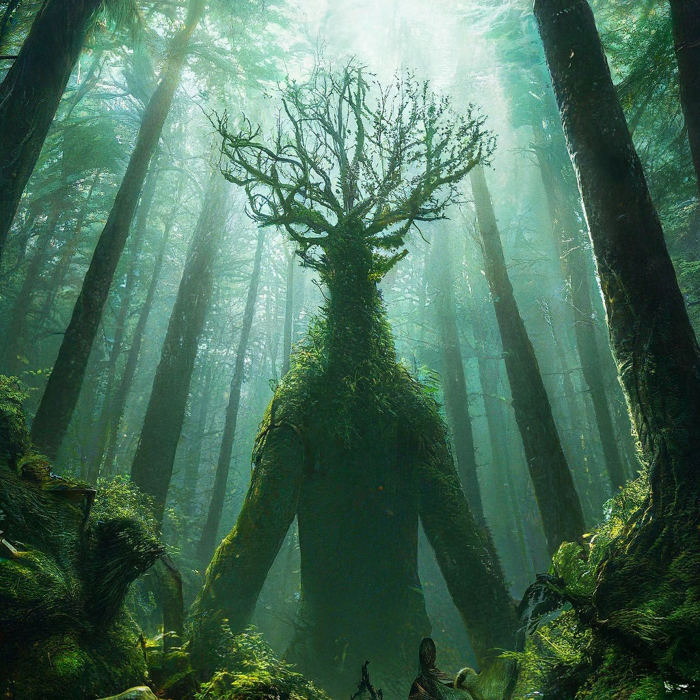
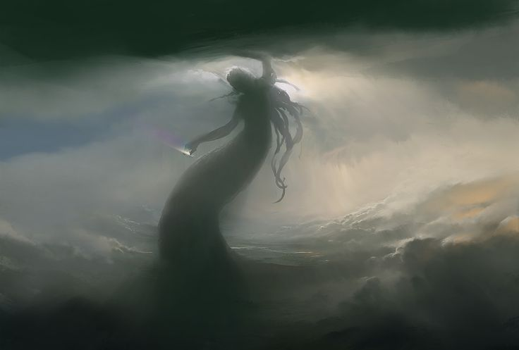
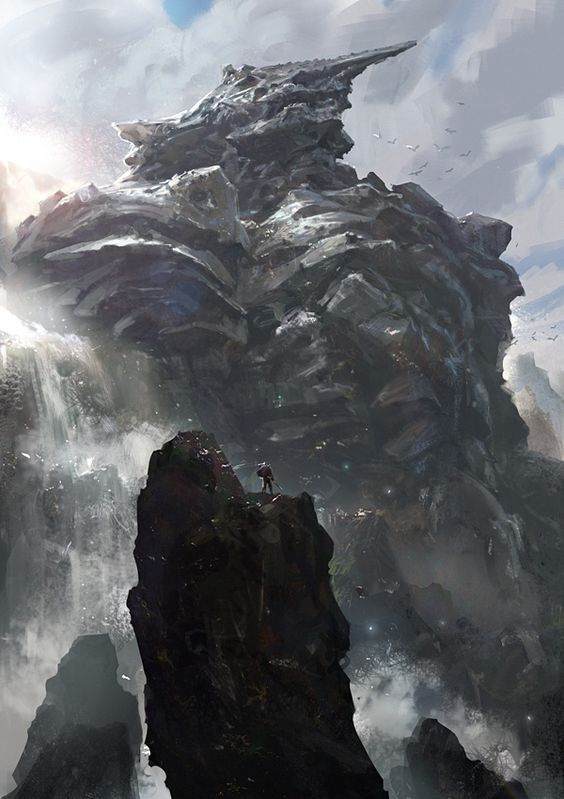

Лесной Хранитель

Опасность: Низкая
Добрый дух, который следит за порядком в чаще. Если ты не ломаешь ветки зря, он может даже показать короткую дорогу домой. Любит тишину.
«Видел огоньки в кустах? Это он проверяет, кто пришел.»
старые записи о том, во что сложно поверить

Опасность: Низкая
Добрый дух, который следит за порядком в чаще. Если ты не ломаешь ветки зря, он может даже показать короткую дорогу домой. Любит тишину.
«Видел огоньки в кустах? Это он проверяет, кто пришел.»

Опасность: Средняя
Живет в омутах. Ночью может запутать сети или покачать лодку, если шуметь. Голос у него как журчание воды, усыпляет бдительность.
«Не смотри в воду, когда солнце село.»

Опасность: Высокая
Спит сотни лет, притворившись горой. Просыпается только если совсем громко. Очень сильный, но добрый, если его не будить.
«Горы тоже ходят, просто мы этого не замечаем.»